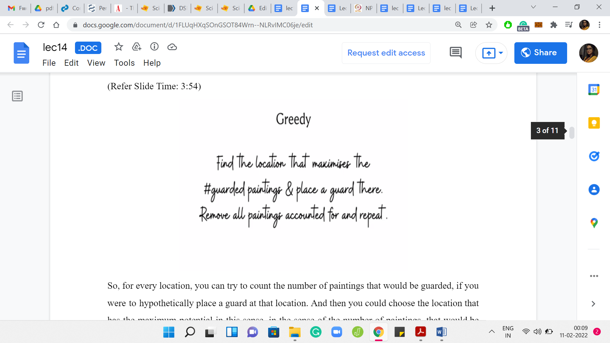
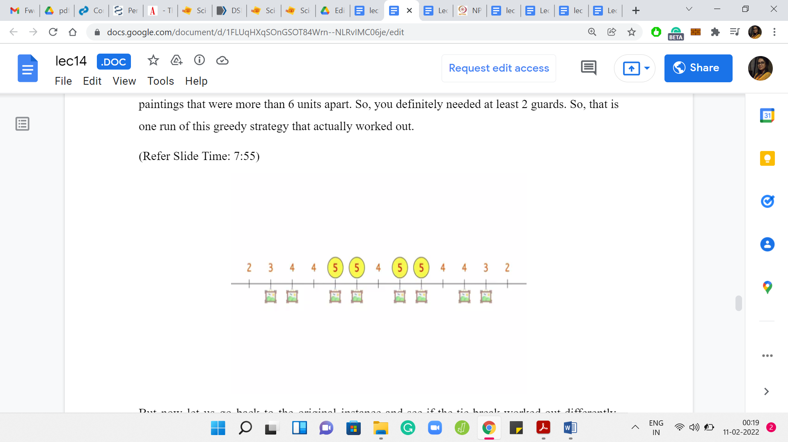

Greedy Algorithms - Module 4 (When Greedy Does Not Work - Guarding a
Lecture - 14
Greedy Algorithms - Module 4 (When Greedy Does Not Work - Guarding a Museum)
Let us continue with our second example of an optimization problem where the natural greedy strategy, in fact, does not work. This problem is called ‘Guarding a Museum’ with some guards. Let us take a look at the problem statement.
(Refer Slide Time: 0:27)

What we have are some paintings that have been placed on a hallway, which you can imagine as just being represented by the number line. You can imagine the paintings as just being some locations on this number line. For convenience, you can imagine that these are integer locations, although that is not really necessary. But that is what our examples will look like. What you are given is some guards.
These guards have a certain purview that they can see. This is also a part of your input. For example, here, we have a guard who is able to see, let us say, 3 units to the left and 3 units to the right. We are given this number K. Every guard can see K units to the left, and K units to the right from where he is positioned. Of course, he also sees the position at which he is standing.
When you place a guard, let us say, at the origin of this number line, then you, in some sense, protect the locations 0, +1, +2, +3 and -1, -2, -3. These are all the locations that are currently under the observation of the guard who is standing at the origin. You can think of this visibility range as something that is given to you as input, and we will call it ‘K.’ All guards have the same visibility range. Any guard that you place at position ‘x’ will end up observing position x, as well as any position that is within K units to the left or right of x.
With this setting in place, let us now define the optimization objective.
(Refer Slide Time: 2:08)

What we want to do is make sure that every painting is protected or guarded at least once. We want to minimize the number of guards that we deploy to be able to achieve this. There are many variants of this problem. You might be in a situation where you want to be more protective, and you might want your paintings to be observed by at least some number of guards.
In other applications, you sometimes do not want 2 guards to observe the same painting. That is usually not in the situation of paintings but other applications that involve, let us say, for instance, the guards may be robotic agents, and maybe when two of them have their sort of range of visibility overlapping, it may cause some undesirable interference.
So, there are variations of this problem where you do not want any particular location to be guarded, or to be observed more than once because that is just physically not desirable. But in this variation of the problem that we are discussing now, we do not mind every painting is observed more than once. But we do require that every painting is observed at least once. That is the goal. That is a feasible solution — where every painting is guarded at least once.
The thing that you want to minimize is the number of guards that you actually deploy. So, hopefully, the problem statement is clear. At this point, you might want to pause and think about what will be a very natural greedy strategy to come up with a solution. Take a pause and come back when you are ready. Hopefully, you had a chance to think about this. Here is a very natural greedy strategy for solving this problem.
(Refer Slide Time: 3:54)

For every location, you can try to count the number of paintings that would be guarded if you were to hypothetically place a guard at that location. Then you could choose the location that has the maximum potential in this sense, in the sense of the number of paintings, that would be taken care of where you to place a guard at that point. If there are multiple locations that have the maximum potential, then you could just pick any one of them arbitrarily. Then you could just delete all the paintings that get taken care of by this choice. Then you could just repeat until you have no paintings left to worry about.
Let me also quickly point out here that you do not really need to check the potential of every point on the number line for this strategy to work. That is anyway not going to be feasible. Notice that because we assume that our paintings were positioned at integer coordinates, we can assume without loss of generality that our guards are also going to be positioned at integer coordinates, by which I mean that there will always be an optimal solution where this is the case.
Suppose somebody does come to you with an optimal solution where the guards are not at integer coordinates, then you can identify all the guards who are not standing at integer coordinates and gently nudge them to the closest integer coordinate without really changing the texture of the solution. It will work just the same.
Only integer coordinates are really of interest to us. Notice that you can also ignore any integer coordinate that is more than K units to the left of the leftmost painting, or more than K units to the right of the rightmost painting. It will never make sense to place guards at these positions. They are never going to protect any of your paintings. We can simply ignore them. Based on this discussion, you should be able to conclude that the number of locations of interest is really given by the distance between the leftmost and rightmost paintings +2K.
What can we say about the distance between the leftmost and rightmost paintings? Let us say there are N paintings. This distance can be unbounded if you have some two consecutive paintings, which are really, really far apart. But if you think about it, if there are two paintings, which are arbitrarily far apart, then we could shrink this gap down to something like 2K+1 without changing anything about the instance. I will let you think about why this is true.
But you should be able to conclude that the number of locations of interest overall is some order NK based on everything that we have said so far. Let us go ahead and compute the potentials of all of these locations, which again, remember is basically the number of paintings that would get taken care of if we were to place a guard at that location.
(Refer Slide Time: 6:29)


Here is an example with N = 8. We have 8 paintings at various locations. Let us say the visibility ranges of the guards are 3. So, K = 3. We are basically computing the potential of each location. This number is written above each location. You can pause the video here for a minute and verify that these numbers are as you would expect. Let us now think about what the greedy algorithm would do.
The greedy algorithm is going to focus on those locations that have the highest potential. Notice that we have 4 locations that are tied at the top, and it is going to pick one of them arbitrarily.
(Refer Slide Time: 7:08)


Let us say the greedy algorithm picks this location and decides to place a guard there. Once we do this, we can forget about these first 5 paintings that are taken care of by the guard. These are the remaining paintings and the recomputed potentials. At this point, you could pick any one of these locations that have the maximum potential, which in this case is 3.
(Refer Slide Time: 7:29)


Place a guard at any of these locations. They will just take care of your remaining paintings. So, you can guard everything with 2 guards. You can also see that this is, in fact, the best possible because if you looked at the original instance, then you will see that there were 2 paintings that were more than 6 units apart. You definitely needed at least 2 guards. That is one run of this greedy strategy that actually worked out.
(Refer Slide Time: 7:55)
 
Let us go back to the original instance and see if the tie-break worked out differently, what would happen. This is a good place to pause and think about whether a different tie-break could lead to a less than optimal solution.
Let us see what would happen if you had picked the second location, which had the maximum potential instead of the leftmost one. In this case, if you place a guard at this position, then you actually leave out the leftmost painting from the purview of the first guard.
(Refer Slide Time: 8:26)

Unfortunately, this is the instance that you are left with. We have a situation where we still have 2 paintings that are more than 6 units apart from each other. We could calculate the potentials as the greedy algorithm would do at this stage. Then the greedy algorithm would have to position 1 guard in the extreme right and 1 on the extreme left.
Because of this situation, we see that the greedy algorithm will need to have 2 more guards on top of the very first guard that it has already positioned, leading to a sub-optimal answer. You might think that it was because of an unlucky tie-break. Correct. There was at least one way of breaking the tie. I think there are at least 2 ways, which would have led to the correct answer.
There are 2 things about this. One is that you cannot rely on luck, especially not in contest programming. You cannot just hope that your greedy algorithm will get the tie-breaks right. While there are problems for which tie-breaking is really the main issue, and maybe the greedy algorithm would work well, if there was a promise that you would never have ties at any stage of the greedy algorithm, which by the way, can be very restrictive but suppose that was the case, maybe things would work out.
But for this particular example, I would encourage you to, as an exercise, come up with an example where the tie breaks do not matter. At the very first decision, there are no ties. There is a unique position that has the maximum potential. The greedy algorithm will be forced to pick that. But that turns out to be a bad choice. If you can come up with such an example, please do share it in the comments either on this YouTube video or at the Discord community, and we look forward to analyzing them.
Now, as a part of this lecture, we have one more video left where we will go through one more example of a situation where the greedy algorithm fails, and in some sense, it fails quite miserably. We will see what we mean by that when we talk about the ‘Traveling Salesman’ problem in the next video. So, I will see you there!